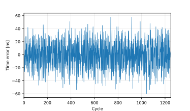
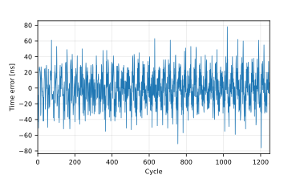
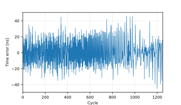

|
flexPTP 1.0
An IEEE 1588 PTP implementation designed for microcontrollers
|
|
flexPTP 1.0
An IEEE 1588 PTP implementation designed for microcontrollers
|
Accurate time synchronization on low-energy, microcontroller based embedded systems is not a feat of the future anymore with the flexPTP library on our side.
flexPTP has been designed with low resource utilization in mind. The library can easily fit into 20K program and 10K data memory space with all features enabled. The library has been ported to and tested on ARM Cortex-M4 and Cortex-M7 based microcontrollers from several manufacturers (e.g. STM32F4xx, STM32F7xx, STM32H7xx, TM4C1294 etc.). According to simple measurements published in several papers of ours, with the help of the library even low-power systems achieved a synchronization precision of tens of nanoseconds.
The library is released under the MIT license with the endeavour to provide quick and compact solution for embedded time synchronization.
Clueless where to start first? We recommend newcomers to start playing around with some complete Examples, then continue with the Software structure chapter and finally read Porting and configuration guide.
flexPTP offers the following capabilities:
The library package ships with hardware ports for several platforms, including:
Apart from the access to a working C compiler, only the following two criteria must be met to compile flexPTP:
For elaborate information on porting and options refer to Porting and configuration.
The network stack (lwIP or EtherLib) must provide tools to communicate receive and transmit timestamps along the PTP messages. It's the developers responsibility to make the timestamps captured in the hardware available to the flexPTP module.
For better understanding how timestamps are fed into flexPTP, refer to ptp_receive_enqueue() in task_ptp.c.
The lwIP (up to v2.2.0) has not been designed to support timestamp propagation right away. A possible workaround is by extending the pbuf structure so that it can carry the timestamps and the usual packet data as well through defining the LWIP_PBUF_CUSTOM_DATA macro.
The low level lwIP-Ethernet driver must be instrumented to communicate receive and transmit timestamps. Fortunately, developing such an extension is not that difficult, at all. As an example you can find a guide here that showcases our amendments to the vendor-provided ethernetif.c low level lwIP Ethernet driver file for the STM32H743 platform. You can also find examples on PTP-compatible lwip low-level drivers among the example projects.
EtherLib provides immediate support for passing timestamp with packet data. For more information, visit the EtherLib repository.
The flexPTP library expects hardware constants and parameters as well as default settings passed in a flexptp_options.h header file.
The preferred and encouraged way to compile the library is to harness the built-in CMake support, although, building using any IDE is possible. The only requirement is a working a C (cross-)compiler (e.g. arm-none-eabi-gcc). More, detailed description on this topic: Compiling the library.
The flexPTP module can be started/stopped by calling reg_task_ptp() and unreg_task_ptp().
The library has an extensive interface for manipulating the PTP operation mode during runtime (e.g. change profile, enable logging etc.), learn more here. The flexPTP includes a CLI interface as well, if a suitable CLI library is given, flexPTP offers the following multitude of CLI commands:
The library can load a previously stored or save the current configuration from and to a non-volatile storage with the help of some glue code.
Our library achieves decent synchronization performance, usually better than 100ns timing precision even on low-power microcontrollers. The below measurements were made using the nowadays common gPTP (802.1AS) profile. Logs corresponding to each plot are located in the "manual/dumps/" folder.
| TM4C1294 | STM32F407 | STM32H743 |
|---|---|---|
|  |  |  |
Time Synchronization Extension for the IO-Link Industrial Communication Protocol
Methods of Peripheral Synchronization in Real-Time Cyber-Physical Systems
The flexPTP library is release under the MIT license.
Examples, Project organization
Documentation style: doxygen-awesome-css by jothepro